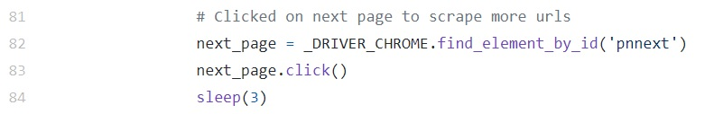

A Simple LinkedIn Scrapper
This project was a by-product of my job search. Before we start, a quick shout out to Vidyut, my instructor from General Assembly. He was the one that came up with this idea and dropped it in the Slack group. He's also the COO of Babel. Badel helps organizations become data driven decision makers through customized solutions. If you're serious about putting your company's data to better use, and improving performance through it, you better check them out.
After my Data Science Immersive with GA, it was time to go out and face the whole new world, and get a job. I needed a quick way to search for relevant people in the industry, connect to them, and spam them with my not so awesome CV. What better way to do that then to harness the combined prowess of Google and LinkedIn. With a little bit of Selenium, and a touch of Python, no LinkedIn job or profile is out of reach. It will be almost like Professor X with Cerebro.
First, we need to perform a Google search on the profiles or jobs interested. I stored the search query, along with other configurables, in a Python script. site:linkedin.com/in/ tells Google to search for LinkedIn profiles and site:linkedin.com/jobs/ for LinkedIn jobs. You can then append keywords relating to job title or position, geographical location, etc to the search query. For the more details on how to construct a search query, refer to the Search Query Language Documentation . Another parameter you can configure is the google_scrape_limit, it limits the number of returned links from the search.
Next, to automate the Google Search, we need to use Selenium. We need to tell Selenium which input element on the web page to set the search query and which submit element to click on to start the search (alternatively we can send a RETURN/ENTER keystroke). To determine those web elements, we need to reference the HTML source of the web page. And we can do that by right-clicking the Google Search home page (this brings up the context menu), and clicking on the Inspect option.
On clicking the Inspect option, the Chrome browser splits into 2 panels. The left panel displays the original web page, and the right panel displays the HTML source behind the web page. To identify HTML source behind the search query text input, we need to click on the Inspect Element icon on the upper left corner, of the right panel displaying the HTML source. After which, mousing over the search query text input will highlight it and bring up the HTML source corresponding to the text input on the right.
The search query text input is defined by a HTML <input> element. Within the input tag contains a whole bunch of attributes that define the text input in terms of styling and functionality. The attribute that we are interested in is the name attribute, as it allows us to uniquely identify the text input amongst the thousands of web elements in the HTML source. Using the find_by_element_name method and the name attribute value of q, we can assess and set the search query text to the value specified earlier in the parameters.py script. sleep(1) tells the browser to wait for 1 second, allowing for the search results page to complete loading.
Google Search will display 10 results (LinkedIn profiles) per page. Each result has a hyperlink to the LinkedIn profile page. We need to scrape and store the URLs of these profile links to be used later. Using the same inspect element method earlier, we can see that unlike the search query text input, there is no name attribute for each hyperlink. However, each search result is enclosed within a <div> element having a class attribute of value r (r probably for result).
Using the find_elements_by_class_name method and the class attribute value of r, we can extract all the <div> elements from the HTML source containing the hyperlinks to the LinkedIn profiles. Within each <div> element, we can use the find_element_by_tag_name method to locate the hyperlink and the get_attribute('href') method to extract the profile URL.
You can configure the number of LinkedIn profiles scraped by setting the google_scrape_limit parameter. Each result page returns 10 LinkedIn profiles. If needed, the scrapper will initiate a next page on Google Search to scrape more profiles. This is again done by locating the next page link using the inspect elements feature of Chrome, and using Selenium to load the next result page. This process is repeated until the scrape limit is reached. sleep(3) tells the scrapper to wait for 3 seconds, allowing the next result page to load.
At this point, we have scrapped and stored the URLs of the LinkedIn profiles based on the search query parameter. Next we'll need to login to LinkedIn to extract more profile information. Using Selenium, we repeat the same process to initiate a login.
- Inspect the web elements on the login page
- Locate the email and password text inputs
- Set their values as defined in the parameters.py
- Invoke a sign in button click
After login, we can scrape any information available on the profile page, but for purpose of this exercise we'll just do the name, position and company. To help us do that, we'll be using the Python module Parsel. Parsel is a tool to help us extract data from HTML and XML using XPath and CSS selectors . Again, we inspect web elements to identify those that contain the information we wish to scrape. Using Parsel, XPath and CSS selectors, we locate and extract the data from these web elements.
The scrapper iterates through all the stored profile URLs, using each to extract the desired profile data. The data can then be persisted in a CSV file to be further processed later.
All code of this project can be found at my GitHub Repository.